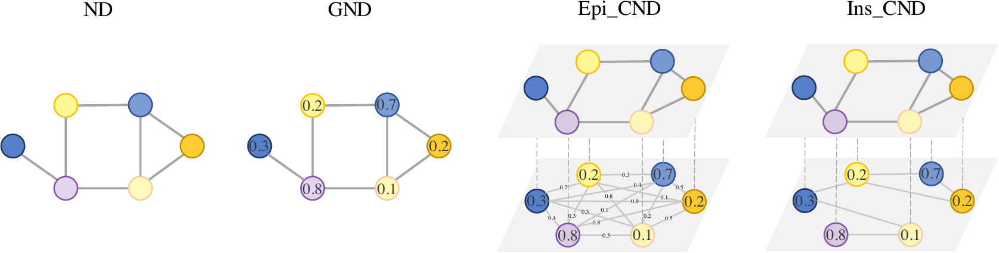
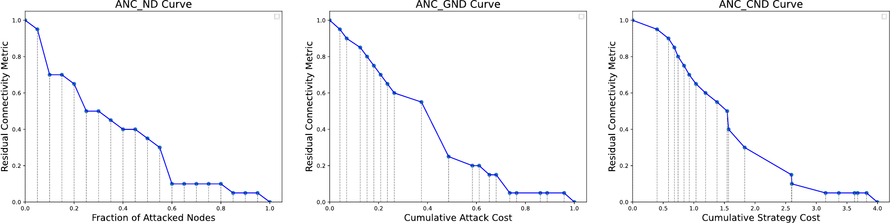
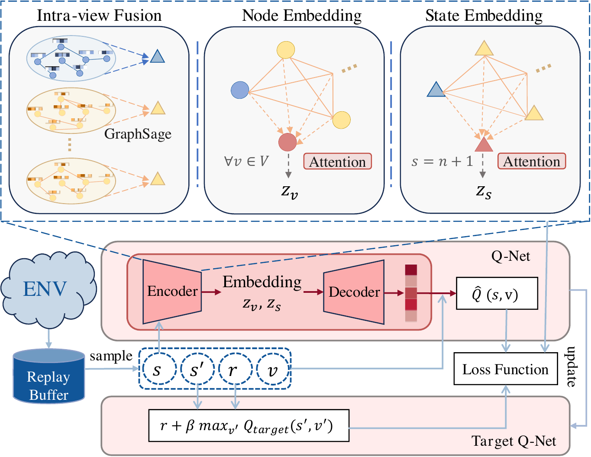
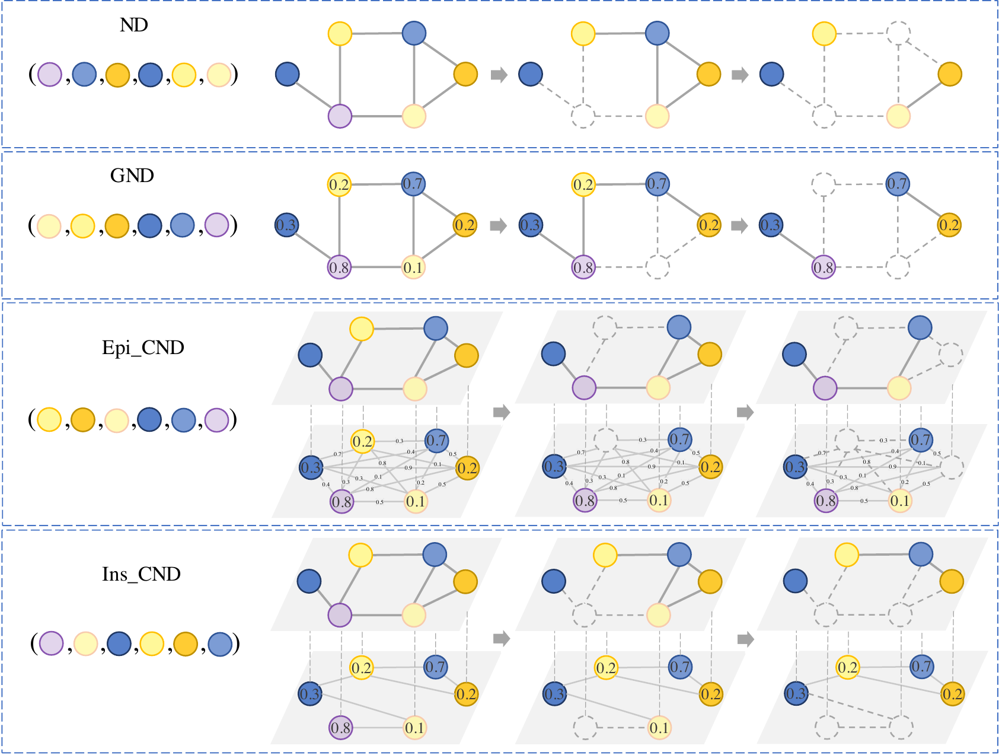
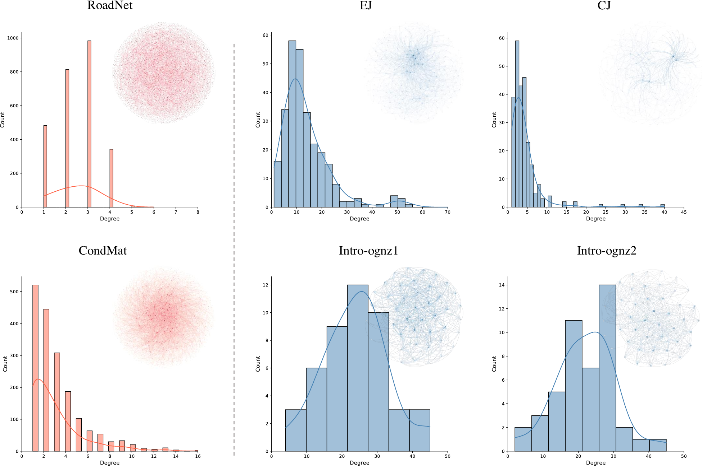
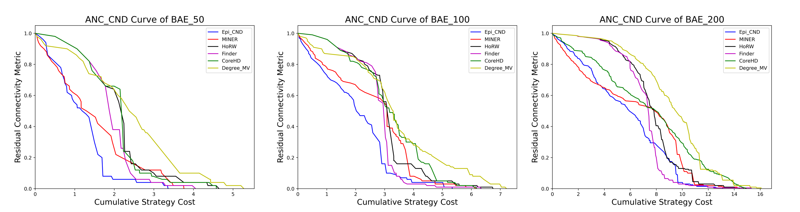
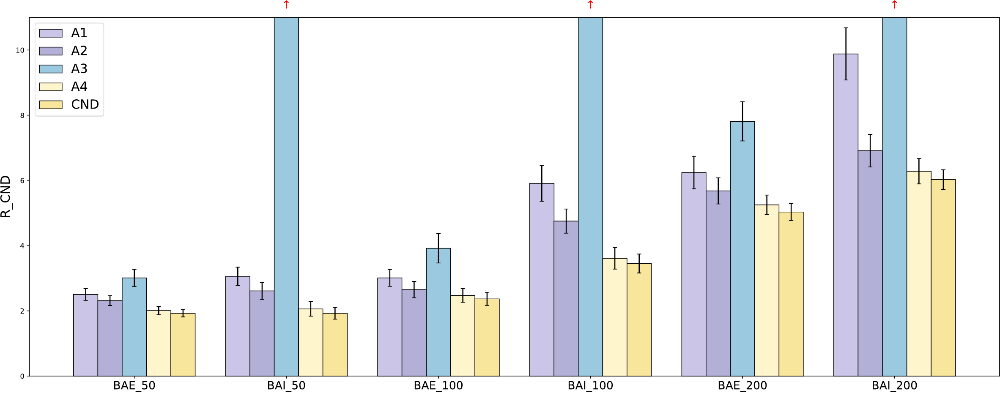

供应链与组织网络
攻击不同实体的资源成本不同，实体之间的转移也受到关系限制。
传统网络瓦解关注“删除哪些节点能最快破坏连通性”。CND 进一步考虑节点攻击成本、相邻攻击之间的转移成本和可行转移约束，并用多视图图表示学习与强化学习生成顺序攻击策略。
社交群体、供应链、交通、通信和神经系统都可以表示为网络。攻击者希望以尽可能低的行动成本快速削弱系统连接；防御者则可以通过研究最优攻击路径，识别关键节点与脆弱转移关系。
攻击不同实体的资源成本不同，实体之间的转移也受到关系限制。
攻击往往沿已有连接传播，下一步目标并非总能自由选择。
不同类型的突触形成目标层与可行攻击层，结构语义并不相同。
同时降低残余连通性、节点攻击成本和跨步转移成本。
Network Dismantling（ND）只衡量结构破坏；Generalized Network Dismantling（GND）加入节点攻击成本，但默认每一步仍可自由跳到任意目标。真实场景中的边会产生转移成本，甚至直接限制下一步是否可达。

CND 用多视图 cost network 统一描述问题：目标层 Gᵗᵍᵗ 记录系统需要被破坏的连接，成本层 Gᶜᵒˢᵗ 记录节点攻击成本和步骤之间的转移代价。对应节点在不同视图中代表同一实体，因此动作空间仍保持为 n 个节点，而不是 n×L。
成本层是全连接加权网络。攻击者可以自由选择剩余节点，但策略目标会惩罚高成本的节点和昂贵的跨步转移。
下一动作必须沿成本层边移动。论文用极大转移惩罚将硬约束转化为可由同一 DQN 框架学习的优化问题。

模型不是为节点一次性打分，而是在每次删除节点后重新描述剩余网络，并预测下一动作的 Q 值。
由于下一次转移成本依赖上一攻击节点，状态定义为剩余多视图网络与上一动作的组合；动作仍是从原网络节点中选择下一个攻击目标。
每个视图加入一个虚拟节点，用 GraphSAGE 聚合邻域信息。普通节点形成视图特定表示，虚拟节点汇总整个网络层的宏观状态。
同一实体在不同视图中的表示构成小型全连接图，通过 attention 写入虚拟视图；各视图的虚拟节点再融合为全局状态 embedding。
Encoder 与 Decoder 估计 Q(s,v)，使用 replay buffer、n-step return、ε-greedy 和 target Q-network 训练。损失同时包含 Q-learning 与图重构目标。

实验包括简单网络的定性对比、50/100/200 节点 BA 合成网络、四个真实网络，以及消融与运行时间分析。统一使用 R_CND 评价破坏速度与综合成本，数值越低越好。


| Dataset | Setting | Best baseline | Result | |
|---|---|---|---|---|
| BA_E_50 | Episodic | 2.032 | 1.923 | CND 最低 |
| BA_E_200 | Episodic | 5.552 | 5.027 | CND 最低 |
| BA_I_100 | Instantaneous | 4.755 | 3.450 | CND 最低 |
| RoadNet-PA | Episodic | 79.897 | 78.348 | CND 最低 |
| C.Elegans | Instantaneous | 7.782 | 7.516 | CND 最低 |
| Intro-Ognz | Instantaneous | 1.601 | 1.591 | 优势较小 |


CND 将目标层与成本层作为多视图联合编码，并通过 Epi_CND 和 Ins_CND 覆盖自由转移与邻接约束两类场景。结果表明，显式建模转移成本能够得到与 ND、GND 明显不同且综合成本更低的攻击顺序。
强化学习训练成本高于简单启发式算法；策略效果也会受到目标网络与训练分布差异影响。面对更大规模或非幂律网络，仍需进一步验证泛化与效率。